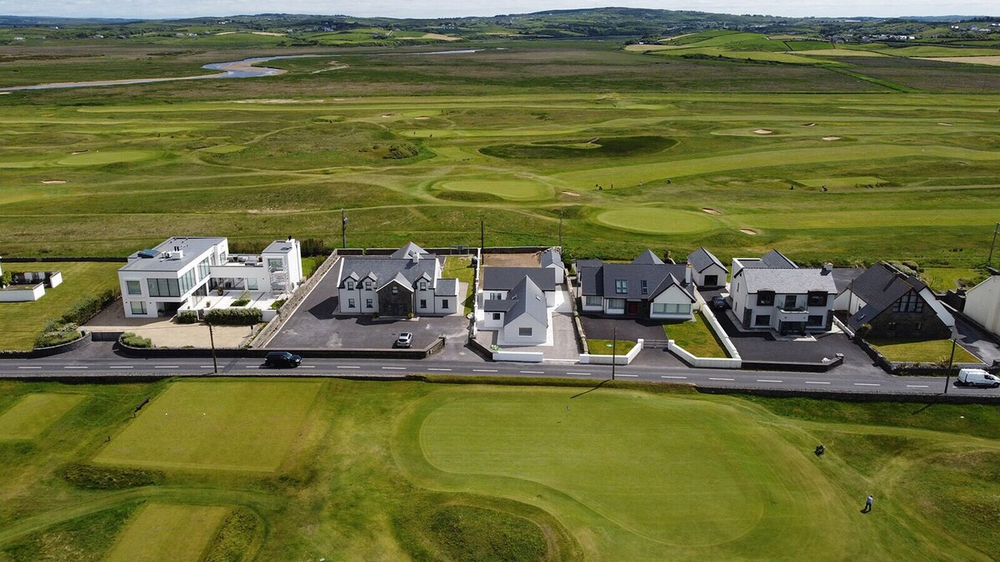
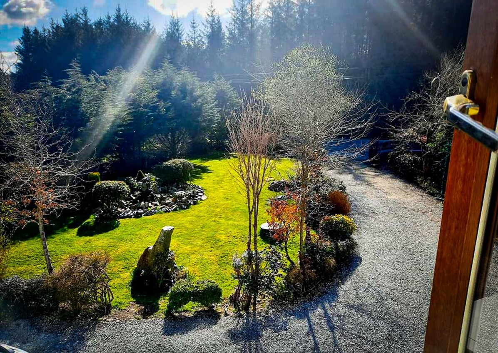
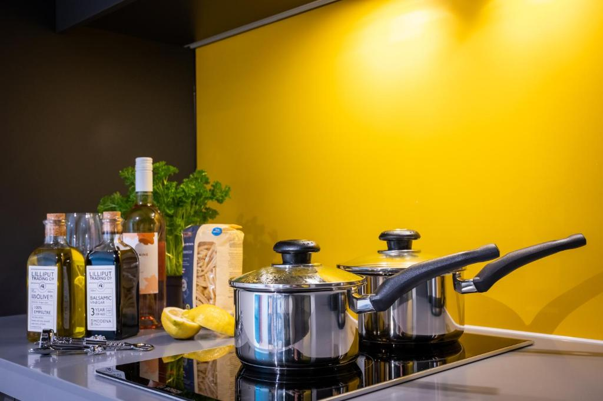

Every traveler is assumed to have paid about the same $999.93 airfare. Flights are shown for total-trip awareness but do not affect who owes the shared pot.
10 travelers · 9 nights · 3 unforgettable bases
Three corners of Ireland. One family adventure.
Dublin streets, Killarney’s lakes and the wild Atlantic coast—linked by two vehicles and enough flexibility for every generation to make the trip their own.
May 31 depart DFWJune 1–10 in Ireland2 vehicles confirmed



Dublin → Killarney → LahinchThis is the amount families are balancing: two booked SUVs, confirmed Killarney lodging and pending Lahinch lodging.
A generous working reserve for groceries, lunches, restaurant dinners, two nicer meals, snacks and nonalcoholic drinks. See the full assumptions below.
Reservation and contribution tracker
What is booked, pending and still missing.
Updated August 20, 2026. Private confirmation codes and account-management links are intentionally not published here.
Euro conversions use the European Central Bank reference rate for August 20, 2026: €1 = $1.1681. Card-network exchange rates can differ.
Shared lodging and vehicle pot
Who is ahead—and who still owes the pot.
Airfare is intentionally excluded from these balances because each traveler is assumed to have paid about the same amount. Points used for shared reservations count at their stated dollar value.
American nonstop schedule
Dates and times every booking must match.
The exact Justin-family receipt establishes the group’s planned arrival and departure window.
AA 132 · Depart DFW Monday, May 31 at 7:00 PMNonstop overnight flightArrive Dublin Tuesday, June 1 at 9:45 AM9 nights in IrelandAA 133 · Depart Dublin Thursday, June 10 at 11:45 AM · arrive DFW 3:30 PM
- 1Dublin · StaycityCheck in Tue, June 1 · Check out Thu, June 32 nights
- 2Killarney · Knockmanagh Holiday HomeCheck in Thu, June 3 · Check out Sun, June 63 nights · confirmed
- 3Lahinch · 7-bedroom golf homeCheck in Sun, June 6 · Check out Wed, June 93 nights · host acceptance pending
- 4Dublin · Staycity againCheck in Wed, June 9 · Check out Thu, June 101 night
The route at a glance
Dublin → Killarney → Lahinch → Dublin.
Use the map to zoom and compare the stays. The final Dublin marker is the same area used at the beginning. Dashed lines show stop order, not exact driving roads.
Loading the route map…
About 4 hours driving; allow 5½–6 hours for loading, lunch and breaks.
Roughly 3 hours direct; allow 4–5 hours with loading, lunch and breaks.
About 3 hours driving; allow 4½–5 hours with group stops.
Three bases, fewer hotel changes
See the current lodging status.
Knockmanagh is confirmed, Lahinch is pending host acceptance, and Dublin remains to be booked. Public listing links are provided for photos and property details.
Build your activity budget
See what each day adds before choosing it.
Every card shows the drive from the relevant lodging base, time commitment and estimated admission per traveler. “Plan it” adds that activity to your personal cost estimate; “Interested” records interest without adding cost yet. Distances will be refreshed if the Dublin candidate or pending Lahinch home changes.
Eat well without worrying about every receipt
Set aside $850 per traveler for food.
This is intentionally comfortable rather than optimistic. It allows for easy breakfasts, casual lunches while sightseeing, several pub or restaurant dinners, three meals cooked at the houses, two memorable group dinners, and plenty of coffees, snacks and nonalcoholic drinks.
Recommended reserve$8,500 group total$850 per traveler · spent as we go, not paid into the shared lodging-and-vehicle pot
Likely range: about $700 per traveler with more house meals, or roughly $1,000 with frequent restaurants, desserts and café stops. Alcohol and personal shopping remain separate.
House breakfasts and basic groceries$1,200
Nine casual sightseeing lunches$2,150
Four casual restaurant dinners$1,500
Two nicer group dinners$1,250
Three dinners prepared at the houses$500
Coffee, snacks and nonalcoholic drinks$1,250
2027 price and currency cushion$650
Comfortable working total$8,500
Why this is reasonable: current menus checked August 20, 2026 show Killarney fish and chips around €21.95 and a two-course early dinner at €32; Lahinch casual mains commonly run about €19.95–€35.95. Tesco currently lists examples such as 2 L milk at €2.25 and 18 eggs at €4.25. Kara is budgeted with an adult appetite, and an additional cushion is included for June 2027 price changes.
Personal or household calculator
Know the plan—and your comfortable total.
Choose the number of travelers you are paying for. Per-traveler costs will be multiplied by that number, while the DFW parking or ride amount is counted once. The recommended food setting includes a healthy cushion, and your choices stay private to your device.
Food is an on-site personal or household expense, not money due to the shared pot. The calculator also includes the current $568 share of known land commitments. Dublin lodging, fuel, extra mileage, tolls and Ireland parking are not yet included. Selected activity costs apply to every traveler shown.